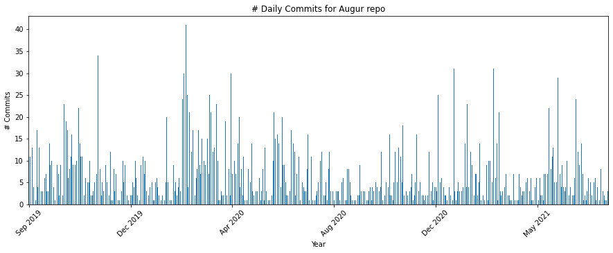
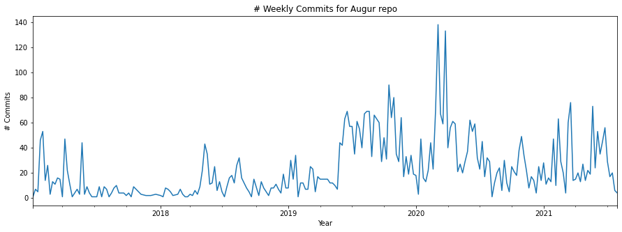
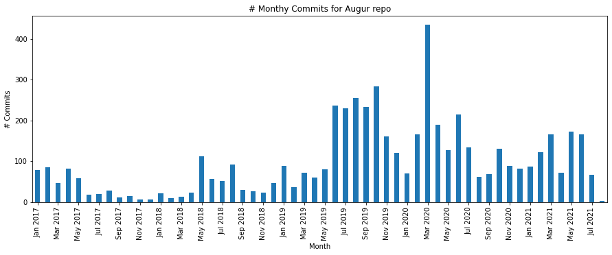
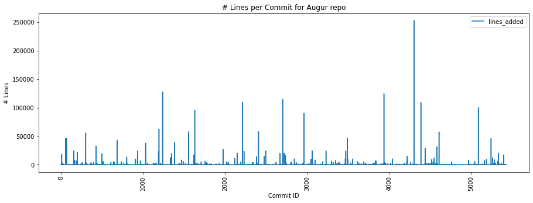
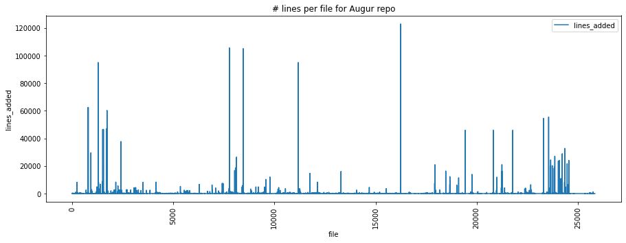

Github Activity Metrics-Commits¶
Activity by Repo
This notebook will aim to query the Augur DB to access the neccessary information to be able to get the following commit metrics dirived from the GitHub Community Metrics working document https://docs.google.com/document/d/1Yocr6fk0J8EsVZnJwoIl3kRQaI94tI-XHe7VSMFT0yM/edit?usp=sharing
Any necessary computations from the data to get the metric value will be done as the queries are determined
import psycopg2
import pandas as pd
import sqlalchemy as salc
import json
import os
import matplotlib.pyplot as plt
import datetime
plt.rcParams['figure.figsize'] = (15, 5)
with open("../config_temp.json") as config_file:
config = json.load(config_file)
database_connection_string = 'postgresql+psycopg2://{}:{}@{}:{}/{}'.format(config['user'], config['password'], config['host'], config['port'], config['database'])
dbschema='augur_data'
engine = salc.create_engine(
database_connection_string,
connect_args={'options': '-csearch_path={}'.format(dbschema)})
#add your repo name(s) here of the repo(s) you want to query if known (and in the database)
repo_name_set = ['augur', 'grimoirelab']
repo_set = []
for repo_name in repo_name_set:
repo_query = salc.sql.text(f"""
SET SCHEMA 'augur_data';
SELECT
b.repo_id
FROM
repo_groups a,
repo b
WHERE
a.repo_group_id = b.repo_group_id AND
b.repo_name = \'{repo_name}\'
""")
t = engine.execute(repo_query)
repo_id =t.mappings().all()[0].get('repo_id')
repo_set.append(repo_id)
print(repo_set)
[25440, 25448]
#Take this out of quotes if you want to manually assign a repo_id number(s)
#repo_set = [25440]
Gather and Process Data¶
Query¶
It should be noted that each entry on this table is for files, not commits. So there can be multiple files/rows for each commits
df_commits = pd.DataFrame()
for repo_id in repo_set:
pr_query = salc.sql.text(f"""
SELECT
r.repo_name,
c.cmt_commit_hash AS commits,
c.cmt_id AS file,
c.cmt_added AS lines_added,
c.cmt_removed AS lines_removed,
c.cmt_author_date AS date
FROM
repo r,
commits c
WHERE
r.repo_id = c.repo_id AND
c.repo_id = \'{repo_id}\'
""")
df_current_repo = pd.read_sql(pr_query, con=engine)
df_commits = pd.concat([df_commits, df_current_repo])
df_commits = df_commits.reset_index()
df_commits.drop("index", axis=1, inplace=True)
df_commits
| repo_name | commits | file | lines_added | lines_removed | date | |
|---|---|---|---|---|---|---|
| 0 | augur | 79ee6429a570b2982fab12a20dea670a858e1141 | 34605744 | 2 | 2 | 2021-03-24 |
| 1 | augur | 79ee6429a570b2982fab12a20dea670a858e1141 | 34605745 | 1 | 1 | 2021-03-24 |
| 2 | augur | 574901f5cd8372006cc64ff2b9f14f5470bba4e4 | 34605767 | 6 | 6 | 2021-03-19 |
| 3 | augur | 7877b0c7937c6242e18ed712d5fb14323d13115f | 34605778 | 2 | 2 | 2021-03-24 |
| 4 | augur | 7877b0c7937c6242e18ed712d5fb14323d13115f | 34605779 | 1 | 1 | 2021-03-24 |
| ... | ... | ... | ... | ... | ... | ... |
| 27673 | grimoirelab | fe7ab96bdf7d0187737285af6dc3c08f5c422f14 | 34556304 | 6 | 2 | 2018-01-19 |
| 27674 | grimoirelab | ff18ee3474f147c6c3b99997ac79b612fd7a2adc | 34556713 | 2 | 2 | 2018-06-04 |
| 27675 | grimoirelab | ff22f21630e80b67707db0551ca1787de843e403 | 34556365 | 1 | 1 | 2018-09-10 |
| 27676 | grimoirelab | ff7bd07014362d6b1b54a7c4de6e70e8412ee1d0 | 34557194 | 15 | 0 | 2019-04-01 |
| 27677 | grimoirelab | ff93d710067dcef632a9403e98c9f9d8b691ef67 | 34556732 | 1 | 1 | 2019-01-28 |
27678 rows × 6 columns
Data Cleaning¶
df_commits['date_time'] = pd.to_datetime(df_commits['date'], format= '%Y-%m-%d')
#IF YOU ONLY WANT TO LOOK AT A ONE OF THE REPOS QUERIED
repo_focus = 'augur'
df_repo_focus = df_commits[df_commits['repo_name'] == repo_focus]
df_repo_focus = df_repo_focus.sort_values(by= "date_time")
df_repo_focus = df_repo_focus.reset_index(drop=True)
df_repo_focus
| repo_name | commits | file | lines_added | lines_removed | date | date_time | |
|---|---|---|---|---|---|---|---|
| 0 | augur | c1c780958deb790fd40520873fdf8eee8e9988d9 | 34595109 | 17 | 1 | 2017-01-05 | 2017-01-05 |
| 1 | augur | c1c780958deb790fd40520873fdf8eee8e9988d9 | 34595110 | 1 | 1 | 2017-01-05 | 2017-01-05 |
| 2 | augur | 9c742edec6169dbd8423c96c07c4725499ebaa6e | 34586512 | 42 | 1 | 2017-01-10 | 2017-01-10 |
| 3 | augur | 4d67b9758af01f1789edab9564c5f876c3665e38 | 34586047 | 1 | 6 | 2017-01-10 | 2017-01-10 |
| 4 | augur | 9c742edec6169dbd8423c96c07c4725499ebaa6e | 34586503 | 4 | 1 | 2017-01-10 | 2017-01-10 |
| ... | ... | ... | ... | ... | ... | ... | ... |
| 25842 | augur | cb0bce873c5ff578a8b3c818f36ce7efe94a5e0e | 34684610 | 5 | 0 | 2021-07-25 | 2021-07-25 |
| 25843 | augur | 70f60c931f3dd764579c83032dad10f24456690f | 34684604 | 1 | 1 | 2021-07-26 | 2021-07-26 |
| 25844 | augur | fa7e9767664c46865ec09b7479b89431fa0fe207 | 34684818 | 0 | 0 | 2021-08-01 | 2021-08-01 |
| 25845 | augur | 3a253df3838f2103ce6ed0de0a87e1bea4904820 | 34684343 | 0 | 0 | 2021-08-01 | 2021-08-01 |
| 25846 | augur | 93032e8fd3263097c0bcb9fdbbbb7402f50e4beb | 34684425 | 0 | 0 | 2021-08-01 | 2021-08-01 |
25847 rows × 7 columns
Number of commits¶
# We will fetch all the unique commit IDs and drop the redundant ones
df_commits_unique = df_repo_focus.drop(columns = ['file'])
agg_fun = {'repo_name': 'first', 'commits': 'first', 'lines_added': 'sum', 'lines_removed': 'sum',
'date': 'first', 'date_time': 'first'}
df_commits_unique = df_commits_unique.groupby(df_commits_unique['commits']).aggregate(agg_fun)
df_commits_unique = df_commits_unique.reset_index(drop=True)
By Day¶
two_years = datetime.datetime.now() - datetime.timedelta(days=2*365)
repo_daily_commits = df_commits_unique[df_commits_unique['date_time'] > two_years]
repo_daily_commits = repo_daily_commits['date_time'].groupby(repo_daily_commits.date_time.dt.to_period("D")).agg('count')
repo_daily_commits.plot.bar()
plt.xlabel("Days")
plt.ylabel("# Commits")
locs, labels = plt.xticks()
N = 90
plt.xticks(locs[::N], repo_daily_commits.index[::N].strftime('%b %Y'))
plt.xticks(rotation=45)
plt.title("# Daily Commits for "+repo_focus.capitalize() +" repo")
plt.show()

By Week¶
repo_week_commits = df_commits_unique['date_time'].groupby(df_commits_unique.date_time.dt.to_period("W")).agg('count')
repo_week_commits.plot.bar()
plt.xlabel("Year")
plt.ylabel("# Commits")
locs, labels = plt.xticks()
N = 13
plt.xticks(locs[::N], repo_week_commits.index[::N].strftime('%b %Y'))
plt.xticks(rotation=45)
plt.title("# Weekly Commits for " + repo_focus.capitalize() + " repo")
plt.show()

By Month¶
repo_monthy_commits = df_commits_unique['date_time'].groupby(df_commits_unique.date_time.dt.to_period("M")).agg('count')
repo_monthy_commits.plot.bar()
plt.xlabel("Month")
locs, labels = plt.xticks()
N = 2
plt.xticks(locs[::N], repo_monthy_commits.index[::N].strftime('%b %Y'))
plt.ylabel("# Commits")
plt.title("# Monthy Commits for " + repo_focus.capitalize() + " repo")
plt.show()

Number of lines per commit¶
df_lines_repo = df_commits_unique[["commits", "lines_added"]]
df_lines_repo.plot()
plt.xlabel("Commit ID")
plt.ylabel("# Lines")
plt.title("# Lines per Commit for "+ repo_focus.capitalize() + " repo")
plt.xticks(rotation=90)
plt.show()

df_commits_unique.describe()
| lines_added | lines_removed | |
|---|---|---|
| count | 5431.000000 | 5431.000000 |
| mean | 581.224636 | 590.132020 |
| std | 6150.904575 | 7409.079865 |
| min | 0.000000 | 0.000000 |
| 25% | 0.000000 | 0.000000 |
| 50% | 3.000000 | 1.000000 |
| 75% | 33.000000 | 14.000000 |
| max | 252656.000000 | 321009.000000 |
Number of lines per file¶
df_repo_focus[[ "lines_added"]].plot()
plt.xlabel("file")
plt.ylabel("lines_added")
plt.title("# lines per file for "+ repo_focus.capitalize() + " repo")
plt.xticks(rotation=90)
plt.show()
